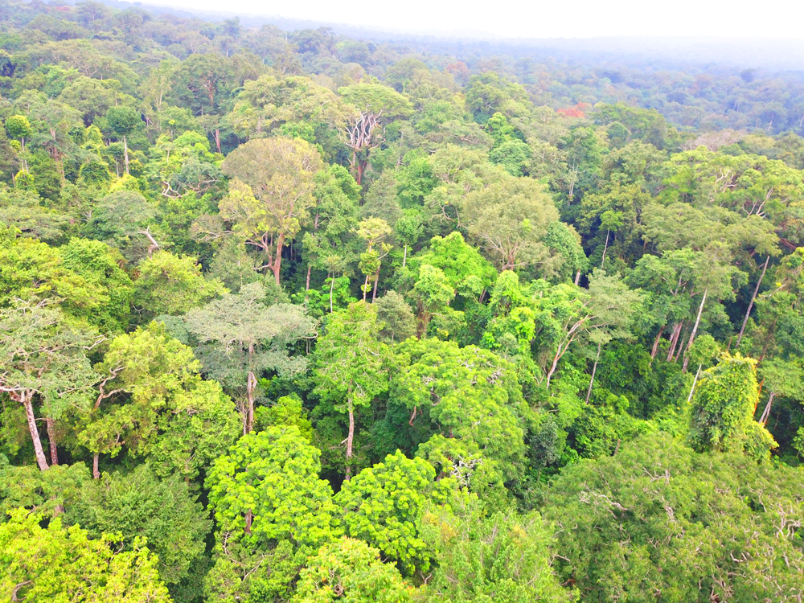
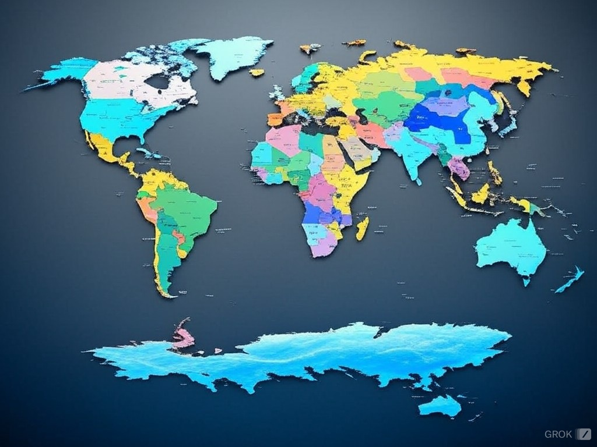
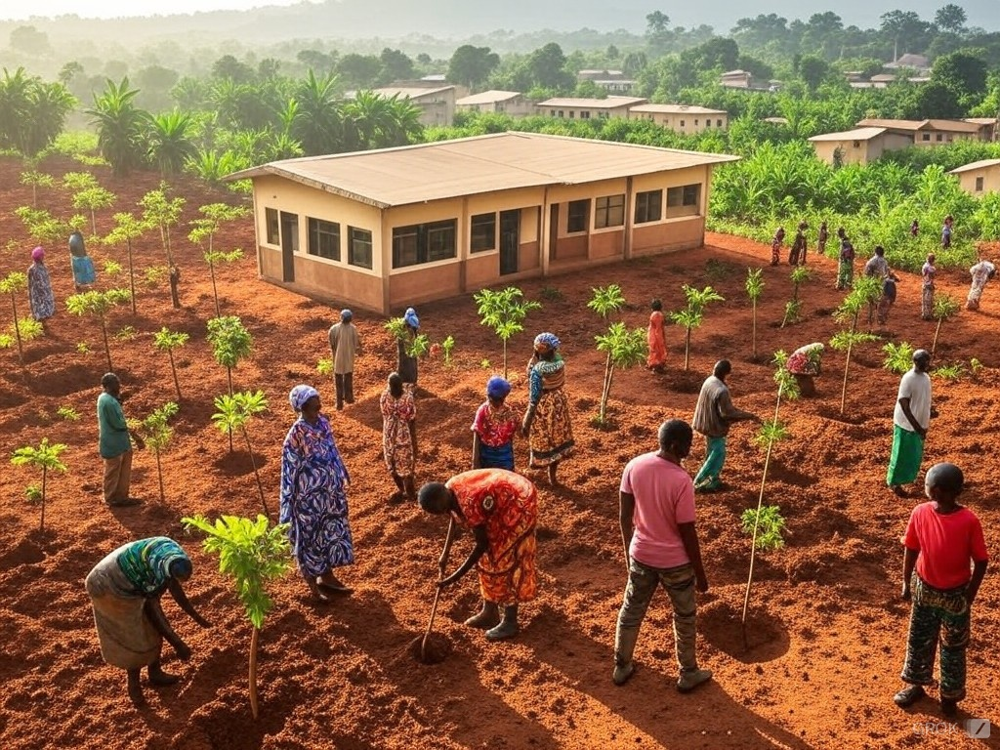

Nous facilitons le partage de connaissances et combinons l'agriculture durable avec les données satellitaires pour régénérer les écosystèmes dégradés.
Écosystèmes restaurés
Pratiques écologiques
Cartographie spatiale
Durabilité & Biodiversité
Restaurer les écosystèmes dégradés et promouvoir activement la biodiversité locale.
Exploiter la cartographie et les technologies spatiales pour l'analyse et la gestion des écosystèmes.
Encourager l'agriculture durable et les pratiques agricoles respectueuses de l'environnement.
Sensibiliser et former les populations aux pratiques de restauration écologique et à l'entrepreneuriat.
Explorez les données satellitaires sur la couverture forestière au Cameroun grâce à notre intégration Global Forest Watch.